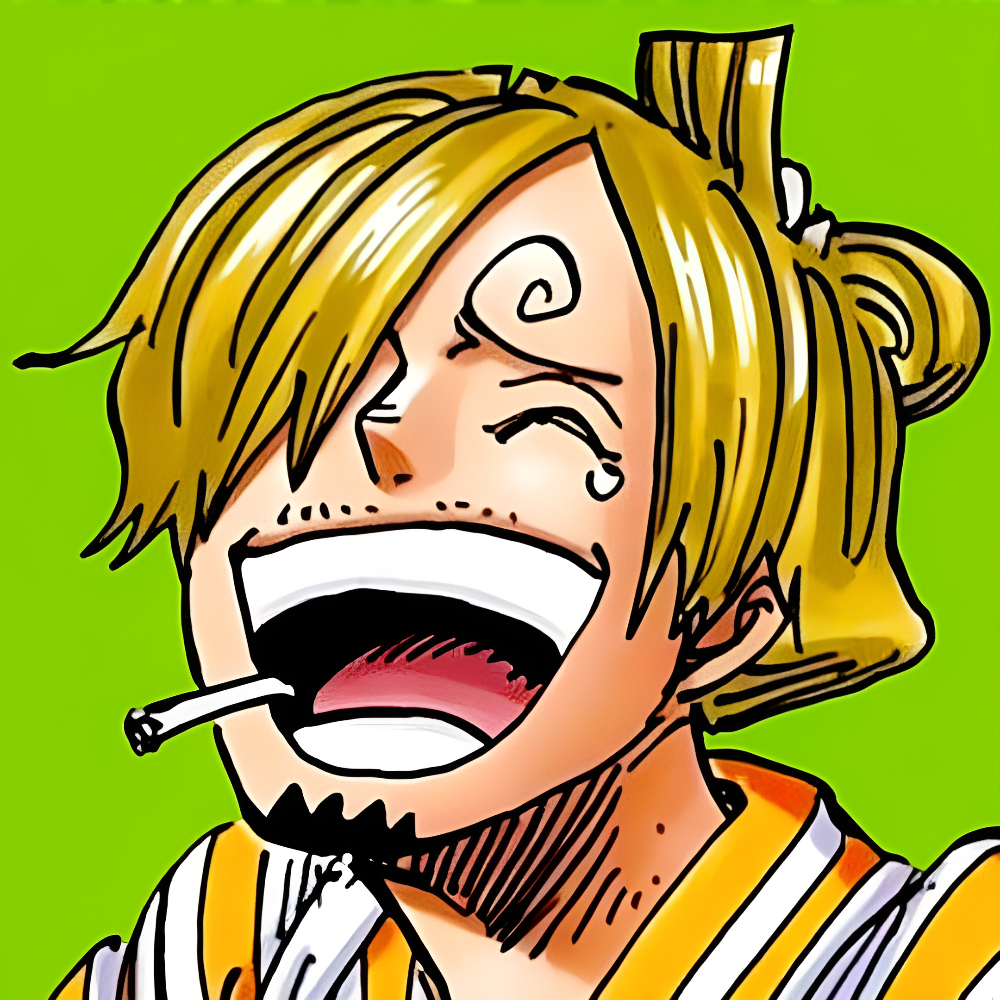

Nuestra Experiencia
En esta sección, reflexionamos sobre nuestra experiencia al trabajar en equipo y cómo la colaboración nos permitió superar desafíos y lograr nuestros objetivos.
Herramientas Utilizadas
- Visual Studio Code
- Git
- GitHub
Desarrollo del Proyecto
- ¿Cuáles fueron las principales dificultades? Durante el desarrollo del proyecto, nuestra principal dificultad fue el poco tiempo disponible para coordinar y unificar los avances de todos los integrantes. A esto se sumó el desafío de integrar las distintas partes del código en GitHub, donde enfrentamos algunos conflictos y desorden temporal, ya que adaptar los componentes de Bootstrap para lograr la estética exacta de Windows XP nos exigió modificar muchos detalles visuales con cuidado de no romper el trabajo previo del resto del equipo.
- ¿Y qué soluciones aplicamos? Para arreglar estos problemas, la solución principal fue hablar por WhatsApp. Esto nos sirvió para organizarnos mejor con el poco tiempo que teníamos y para ayudarnos entre todos, guiando a los compañeros cuando tenían dudas con el código. También, para no romper la página al usar GitHub, empezamos a revisar los cambios juntos antes de juntar los archivos, así nos aseguramos de que el diseño se mantuviera igual y no se desarmara nada.
Aprendizajes y Colaboración
- Aprendizajes técnicos: En la parte técnica aprendimos bastante de todas estas herramientas. Con HTML y CSS vimos cómo estructurar bien las páginas y cómo cambiar los estilos a mano para lograr el efecto visual de Windows XP. Sobre Bootstrap, aprendimos que facilita mucho ordenar el contenido rápido gracias a sus grillas, aunque tuvimos que adaptarlo harto para lograr el diseño que queríamos. Finalmente, con Docker y Nginx entendimos cómo meter nuestro sitio en un contenedor para publicarlo y hacer que funcione de forma local sin problemas de configuración.
- ¿Qué tan importante es la colaboración y organización en proyectos de desarrollo web? Nos dimos cuenta de que es fundamental. Sin organizarnos bien, no habríamos podido terminar el proyecto con el poco tiempo que teníamos ni resolver los problemas al juntar los archivos. Trabajar en equipo nos sirvió para dividir las tareas, apoyarnos cuando alguien se quedaba atascado y lograr armar la página completa de forma mucho más rápida y ordenada.

Vianca Viveros
SCRUM MASTER
Responsabilidad: Responsable de los detalles visuales y la estética general de la página. Las tareas incluyeron mejorar el diseño con colores, agregar el contenido necesario, hacer una revisión final para asegurar que estuviera todo lo pedido y brindar apoyo técnico para guiar al equipo.
Reflexión: La mayor reflexión que me deja este trabajo es la importancia de escribir nuestro código. Al intentar replicar la interfaz de XP, cada detalle importaba, y unir las partes en GitHub requirió mucha revisión para no romper el código del otro, pero nos sirvió para aterrizar los conocimientos.

Benjamin Chamorro
DESARROLLADOR
Responsabilidad: Responsable de la creación y estructura del diseño frontend del sitio. Las tareas incluyeron armar la parte visual de las páginas y encargarse de la grabación de las pruebas audiovisuales para documentar el funcionamiento del proyecto.
Reflexión: Desarrollar este proyecto fue un reto técnico y creativo muy gratificante. Adaptar Bootstrap para lograr la estética retro de Windows XP nos exigió cuidar cada detalle visual. Además, armar nuestros perfiles y configurar el despliegue del sitio usando Docker y Nginx fue un aprendizaje invaluable...

Andres Chavez
DESARROLLADOR
Responsabilidad: [Escribe aquí]
Reflexión: Considero que trabajar con html y css sobre todo me pareció algo bastante entretenido que fomenta la creatividad, sin embargo aun se tiene el inconveniente de que a la larga puede quedar bastante desordenado o muy complejo a medida que se añade codigo.

Rubén Gorigoitia
DESARROLLADOR
Responsabilidad: Responsable del desarrollo de la página principal del sitio. Las tareas incluyeron la integración de la sección de etiquetas HTML y la corrección general de problemas y errores durante el avance del proyecto.
Reflexión: El desarrollo de este proyecto fue entretenido para conocer varias cosas. Trabajar con Bootstrap nos facilitó el diseño. Lograr la estética de Windows XP requirió visualizar detalle a detalle para que quedara parecido. Fue fundamental la comunicación del equipo gracias a GitHub...

Javier Martínez
DESARROLLADOR
Responsabilidad: [Escribe aquí]
Reflexión: El realizar este proyecto me permitió el comprender de mejor forma el funcionamiento de la web y el desarrollo de aplicaciones web, así como también el trabajo en equipo y la colaboración entre los integrantes del grupo.